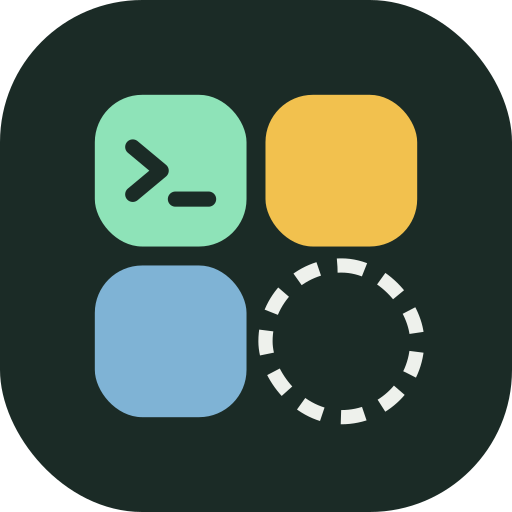
Tessera
Run Linux desktop apps on Android. Firefox, GIMP, VS Code, LibreOffice, all of Debian and 2,800+ Flathub apps, each as its own Android app, on your phone's GPU and in your phone's colors. No terminal setup, no VNC, root optional.
Version 0.2 (alpha) · Android 7+ · arm64 · free software under the GPLv3
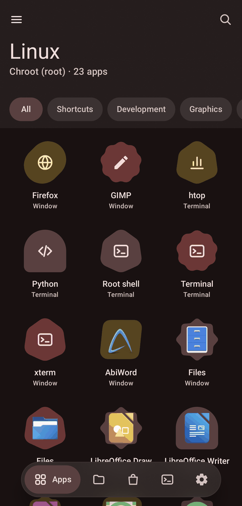
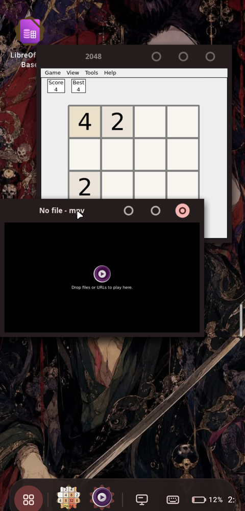
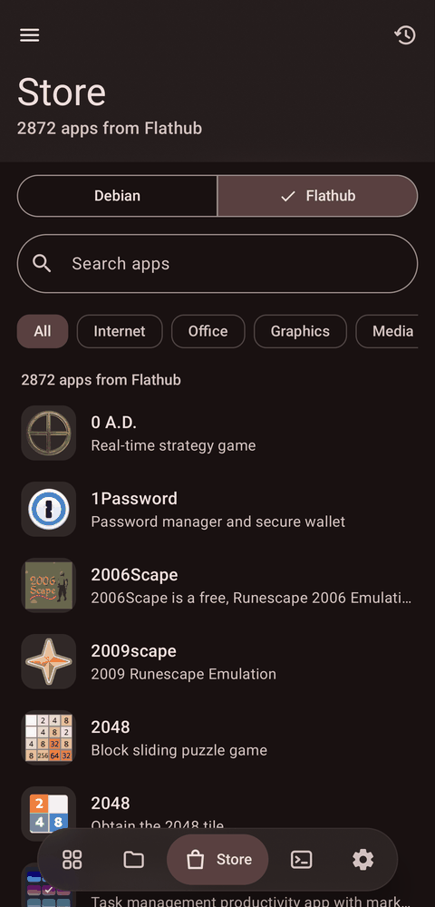
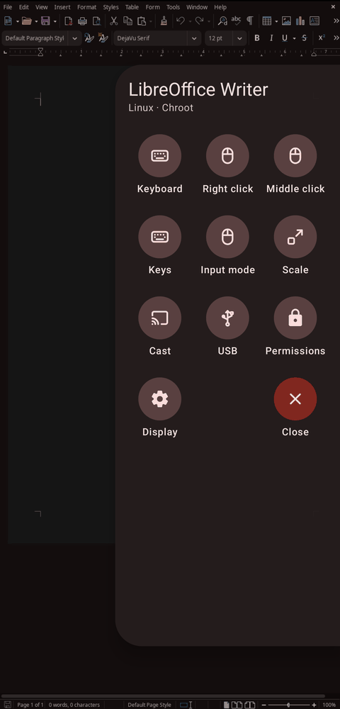
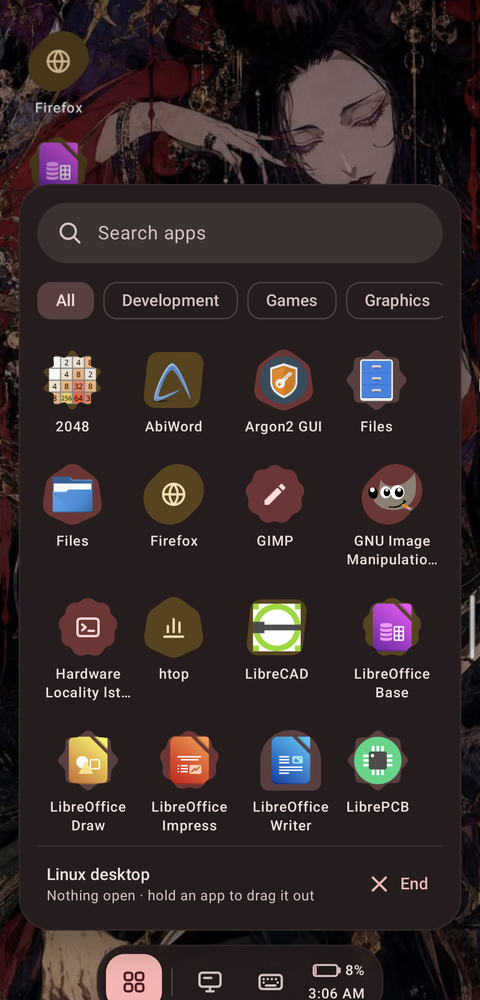
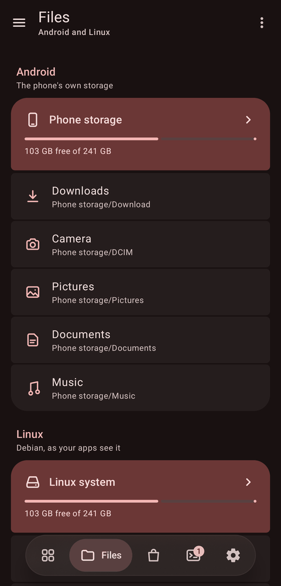
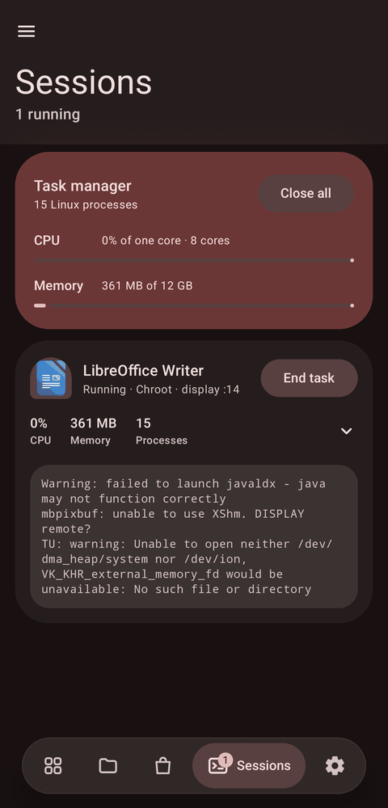
What makes it different
Running Linux on a phone has meant a terminal app, commands from a forum post and a VNC viewer showing a whole desktop shrunk to a phone screen. Tessera turns that into an app launcher: install Debian with a tap, pick apps from a store, and tap an app to open it in its own window.
Flathub on a phone, without root
Flatpak normally needs bubblewrap, which needs user namespaces, which Android kernels
don't have, so flatpak run can't work on a phone. Tessera runs Flathub apps
anyway.
- Flatpak installs, Tessera runs. Flatpak downloads apps and runtimes as
usual; Tessera builds each app's world itself: the runtime at
/usr, the app at/app, the GL drivers where the runtime expects them. In PRoot mode that takes no root at all. - Fully integrated. A Flathub app gets the same window, Recents cards, keyboard, sound, clipboard, theme and permissions as any Debian app.
- On the GPU. Tessera's Turnip driver loads inside Flathub's runtimes: OpenGL 4.6 on Adreno, confirmed with Flathub's mpv.
- One switch. The store flips between Debian's nearly 2,000 desktop apps and Flathub's 2,800+ arm64 apps, with icons, screenshots, categories and search.
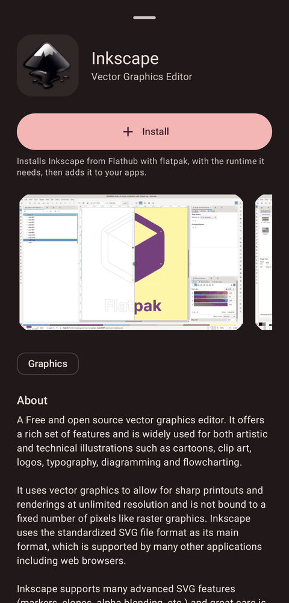
Linux apps in your phone's colors
Linux apps usually look like a 2010 desktop on a phone. Tessera themes them with your phone's Material You colors, taken from your wallpaper, and follows dark mode live: switch Android to dark and every open Linux app turns dark within seconds, without restarting.
- GTK 3 with a recolored adw-gtk3, GTK 4 and libadwaita through a settings portal Tessera serves itself, Qt through its GTK theme, LibreOffice on its GTK front end, and Firefox and Chromium apps following light and dark.
- A white, rounded pointer (Bibata) instead of X's sharp black arrow.
- Per app: leave any app out from its Look and graphics menu.
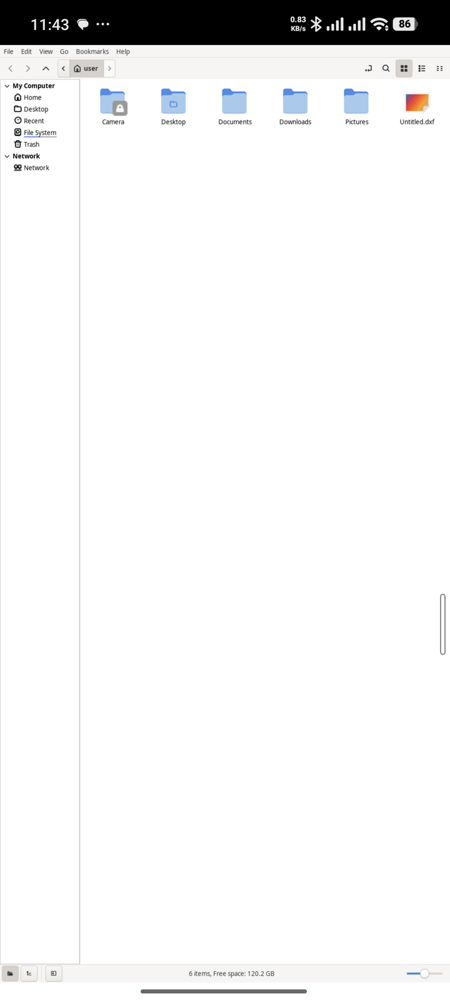
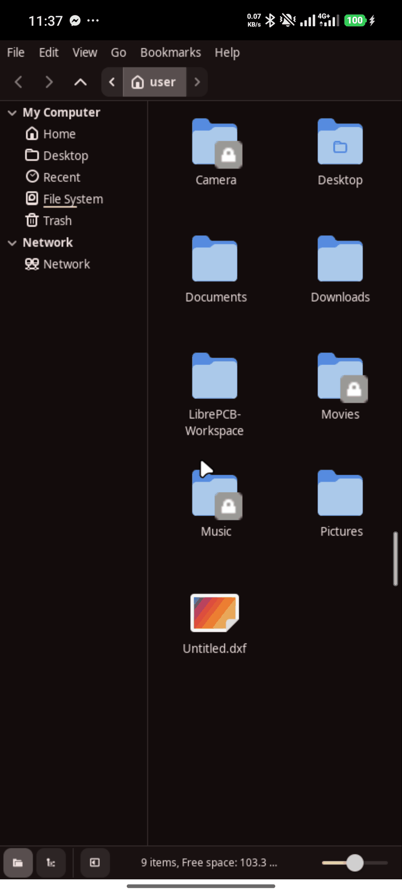
Every Linux app is a real Android app
- Its own window and Recents card, named and with its icon. Swipe the card away to close the app.
- A Recents card per window: a browser's second window or a settings dialog gets its own card, so switching between them works like Android.
- Pin Linux apps to your home screen next to your Android apps.
- No tiny desktop to drive: the app fills the screen at a readable size.
- Find any app with Android's search bar on top of your Linux apps.
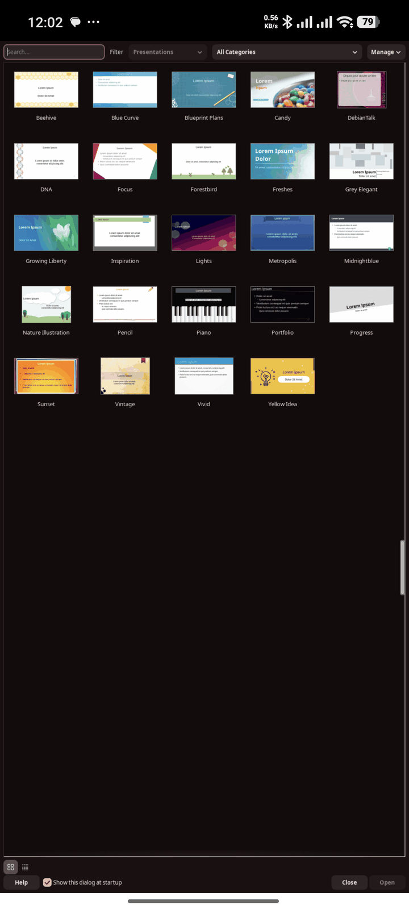
Live scaling, per app
Swipe in the window panel and drag Scale: the app lays itself out again at the new size while you drag, from small and dense to big and touchable, and Tessera remembers the size for next time.
The same panel has what a phone lacks: right click, Esc, Tab, Ctrl+C, Alt+Tab and F11.
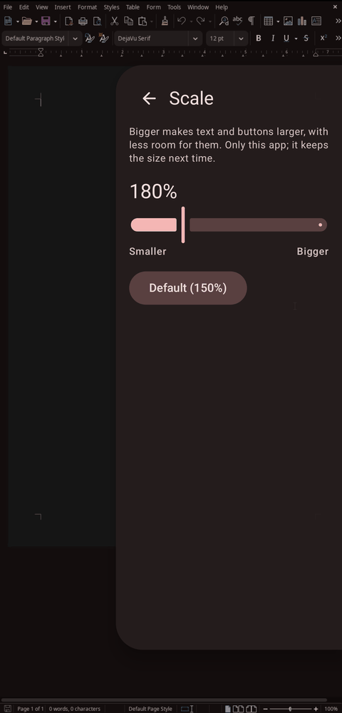
A whole desktop, when you want one
The desktop button next to the search bar opens a Linux desktop, through the same sheet as any app, with its install, permissions and graphics settings.
- Windows move, snap to half the screen and minimize, with title bars in your phone's colors and buttons sized for fingers.
- A floating Material dock, a rail on the left in landscape, with a Start menu and search, a button per open window and the clock.
- Shortcuts and files on the desktop, by drag and drop too; windows too large for the phone open maximized.
- Runs full screen, and Flathub apps open inside it too.
Real GPU acceleration on Snapdragon
Tessera ships its own build of Mesa: Turnip, Vulkan for Adreno GPUs through Android's own GPU driver interface, and Zink, OpenGL on top of it. Apps get OpenGL 4.6 and Vulkan with no setup; on an Adreno 740, glxgears runs at about 240 fps.
If an app draws wrong, its Look and graphics menu has fixes named after what you see, like "Fix black blocks" and "Fix flicker", or switches its GPU off.
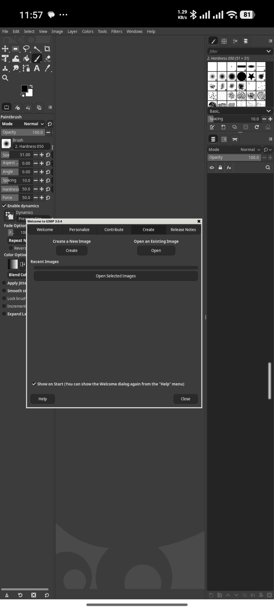
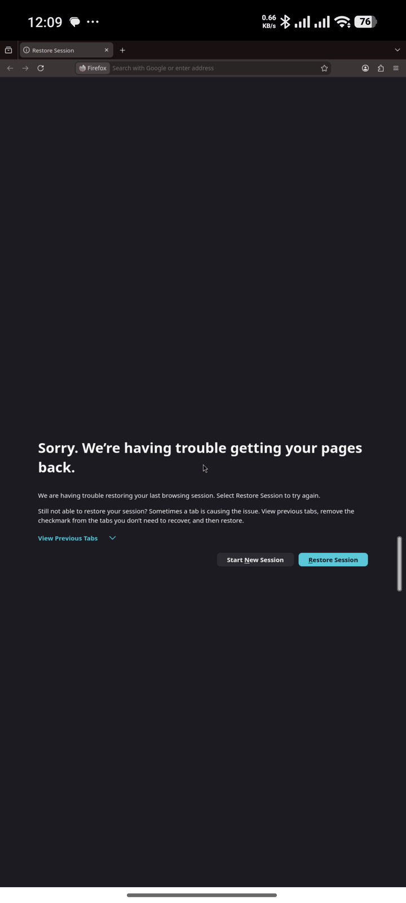
Every app in its own sandbox
Each app runs in a container that gets only what you grant it: specific folders, read-only or not, network, sound, a display and devices, changed from the app's page like Android permissions.
- PRoot mode works on any phone, without root. Its limits are best-effort.
- Chroot mode, with Magisk, KernelSU or APatch, enforces every permission with kernel namespaces and an unprivileged user, and runs faster.
The app tells you honestly which permissions each mode can enforce.
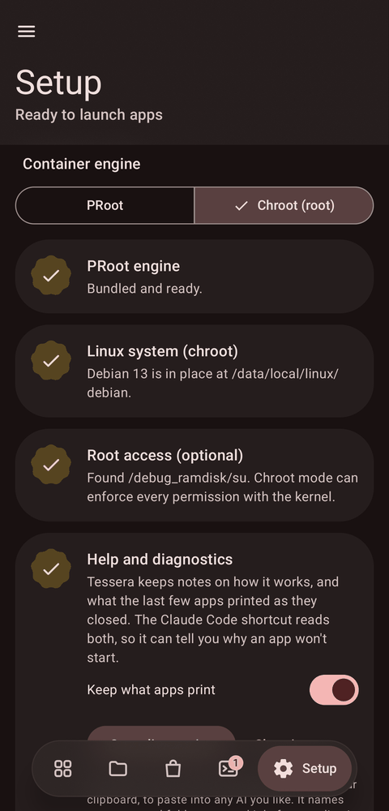
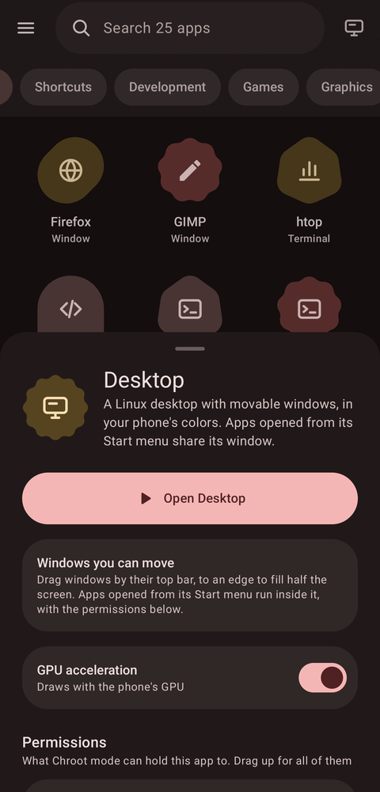
Files and tasks
- Files browses phone storage and the whole Linux system side by side: copy, move, compress, extract, edit text, change permissions, open files in Android or Linux apps, install a .deb with a tap, or browse as root.
- Task manager lists every Linux process with live CPU and memory per app, and ends a task with a two-tap confirmation on its card.
And everything around it
Feels native
The Android keyboard opens by itself in text fields, the clipboard works both ways, and sound plays through Android, per app.
Touch is touch
Scroll and pinch with your fingers, or switch an app to touchpad or mouse mode, where touch and hold right-clicks.
Cast to a TV
Send an app to a TV or monitor by cable or wireless display, and use the phone as a Material 3 trackpad for it.
The phone as a PC trackpad
Pair it with a computer over Bluetooth, or USB with root, and it's a trackpad and keyboard. No app needed on the computer.
USB devices (experimental)
Give an app a USB device, even in PRoot mode, or the whole bus for fastboot, adb and other flashing tools in chroot mode.
Terminal and shortcuts
A terminal with extra keys, your own commands as icons, a config editor, and apps installed with apt or .deb listed too.
Keeps running
A foreground service holds sessions, and Setup lifts Android's background process limit in one tap with root, or shows the adb command.
Help that knows Tessera
When an app misbehaves, diagnostics with the output of the apps that just closed are one tap away, for Claude Code or any assistant.
How it works
Containers
PRoot is built from source for Android and ships inside the APK. Chroot mode uses a private mount namespace, a network namespace when network isn't granted, a minimal /dev and an unprivileged user.
Display
Each app gets its own X server (a fork of Termux:X11), so apps can't see each other's windows. Tessera follows each X window to give it its own Android task.
Flathub apps
Debian's flatpak installs them; Tessera runs them in a root of their own beside the session's helpers, sharing its X socket, D-Bus and sound, without bubblewrap.
Theming
A per-session theme recolored from Android's Material colors, xsettingsd and a small settings portal, rewritten live when Android's colors change.
Graphics
Mesa's Turnip talks to Android's KGSL GPU interface; Zink's frames reach the X server as images, since Android offers no shared-buffer path for them.
Permissions
Each launcher entry is a manifest of what to run and what it may touch. The store writes them for you, with permissions that suit each app's category.
Get started
- Download the APK from GitHub releases, or add the repository to Obtainium to get updates.
- Open Tessera, go to Setup and install Debian 13. Allow it to lift the background process limit when asked.
- Open the Store, install an app, and tap it. Or tap the desktop button for a whole desktop.
Needs Android 7 or newer, an arm64 phone and a few GB of free storage. GPU acceleration needs a Snapdragon (Adreno) GPU. Root is optional. This is an alpha: report bugs on GitHub.
FAQ
Do I need root?
No. Everything works in PRoot mode. Root adds chroot mode, which enforces permissions properly and runs faster.
Which apps work?
Desktop apps from Debian's catalog, Flathub's arm64 apps, and anything you install with apt or as an arm64 .deb. Electron apps like VS Code work.
Flatpak needs bubblewrap. How does Flathub work here?
Flatpak only installs; Tessera runs the apps itself, building each one's file system with PRoot or a mount namespace instead of bubblewrap. That also means no Flatpak sandbox: Tessera's own per-app permissions apply instead.
Why isn't it on Google Play?
Play requires a newer target API level, and those forbid running programs from app storage, which is where Linux lives. Termux makes the same trade-off.
My apps stop in the background.
Android 12 and newer limit background processes. Setup shows whether the limit is on, and lifts it in one tap with root, or gives you the adb command.
An app draws wrong with the GPU on.
Hold its icon, open Look and graphics, and try the fix that matches what you see, or switch its GPU off.